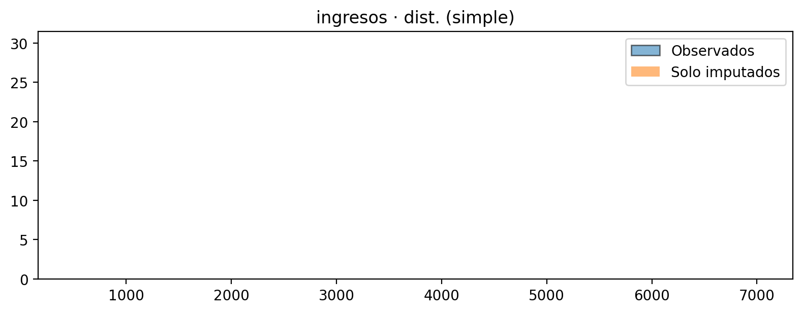
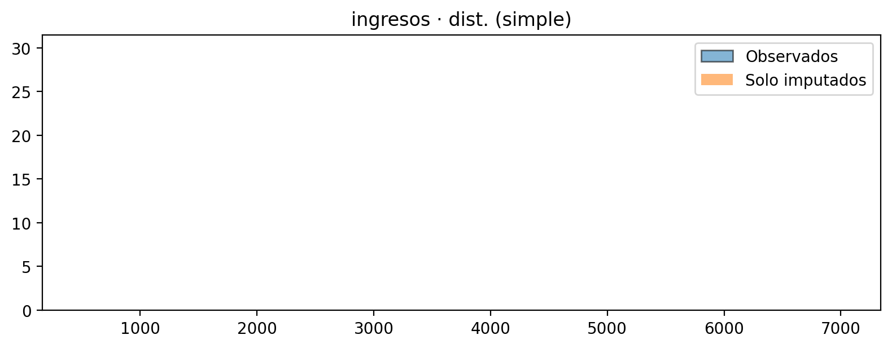

**Taller de Imputación de Datos#
Objetivo: Detectar y clasificar faltantes (MCAR/MAR/MNAR), decidir si imputar, aplicar técnicas, comparar resultados y concluir si la imputación preserva la distribución.
Datos: base_imputacion_mixta_1000.csv (mixto: numéricas y categóricas).
Nota: Se documentan las decisiones de no imputar cuando la imputación distorsiona la distribución o el mecanismo es MNAR.
0. Configuración e importaciones#
# %matplotlib inline
%config InlineBackend.figure_format = 'retina'
import numpy as np
import pandas as pd
import matplotlib.pyplot as plt
from pathlib import Path
from IPython.display import display
# estadísticas
from scipy import stats
# modelos/imputadores
from sklearn.linear_model import LinearRegression
from sklearn.impute import KNNImputer
from sklearn.experimental import enable_iterative_imputer # noqa: F401
from sklearn.impute import IterativeImputer
from sklearn.preprocessing import OrdinalEncoder
# Paths
CSV_PATH = "https://raw.githubusercontent.com/Kalbam/Datos/refs/heads/main/base_imputacion_mixta_1000.csv"
OUT_DIR = Path("outputs_taller")
OUT_DIR.mkdir(parents=True, exist_ok=True)
print("OUT_DIR:", OUT_DIR.resolve())
OUT_DIR: C:\Users\potot\OneDrive\Documentos\AVIZ\Taller_Imputacion_Book\outputs_taller
df = pd.read_csv(CSV_PATH)
df_original = df.copy(deep=True)
num_cols = df.select_dtypes(include=[np.number]).columns.tolist()
cat_cols = df.select_dtypes(include=["object", "category", "bool"]).columns.tolist()
print("Columnas numéricas:", num_cols)
print("Columnas categóricas:", cat_cols)
print("\n.head():")
display(df.head())
print("\n.info():")
df.info()
print("\n.describe() numéricas:")
display(df[num_cols].describe().T if num_cols else "No hay numéricas")
if cat_cols:
print("\n.describe() categóricas:")
display(df[cat_cols].describe().T)
Columnas numéricas: ['edad', 'altura_cm', 'ingresos', 'gasto_mensual', 'puntuacion_credito', 'demanda']
Columnas categóricas: ['fecha', 'sexo', 'ciudad', 'nivel_educativo', 'segmento', 'estado_civil']
.head():
| fecha | sexo | ciudad | nivel_educativo | segmento | estado_civil | edad | altura_cm | ingresos | gasto_mensual | puntuacion_credito | demanda | |
|---|---|---|---|---|---|---|---|---|---|---|---|---|
| 0 | 2024-01-01 | F | Medellín | NaN | B | Unión libre | 19.0 | 161.821754 | 3574.753806 | 1832.731832 | 640.465372 | 119.202995 |
| 1 | 2024-01-02 | F | Barranquilla | NaN | B | NaN | 52.0 | 167.819566 | 3163.626815 | NaN | 533.108430 | 124.457874 |
| 2 | 2024-01-03 | M | Bogotá | Secundaria | B | Soltero/a | 38.0 | 165.756219 | 2765.672259 | 1219.535074 | 491.016910 | NaN |
| 3 | 2024-01-04 | F | Bogotá | NaN | B | Casado/a | 57.0 | 160.642670 | 4320.397345 | 1908.324816 | NaN | 129.426792 |
| 4 | 2024-01-05 | M | Cali | Técnico | B | Soltero/a | 67.0 | 151.402909 | NaN | 1887.385697 | 610.213994 | 133.916319 |
.info():
<class 'pandas.core.frame.DataFrame'>
RangeIndex: 1000 entries, 0 to 999
Data columns (total 12 columns):
# Column Non-Null Count Dtype
--- ------ -------------- -----
0 fecha 1000 non-null object
1 sexo 980 non-null object
2 ciudad 950 non-null object
3 nivel_educativo 900 non-null object
4 segmento 800 non-null object
5 estado_civil 650 non-null object
6 edad 970 non-null float64
7 altura_cm 920 non-null float64
8 ingresos 880 non-null float64
9 gasto_mensual 750 non-null float64
10 puntuacion_credito 500 non-null float64
11 demanda 850 non-null float64
dtypes: float64(6), object(6)
memory usage: 93.9+ KB
.describe() numéricas:
| count | mean | std | min | 25% | 50% | 75% | max | |
|---|---|---|---|---|---|---|---|---|
| edad | 970.0 | 42.861856 | 14.621382 | 18.000000 | 30.000000 | 43.000000 | 55.000000 | 69.000000 |
| altura_cm | 920.0 | 167.760096 | 9.275530 | 140.000000 | 161.488768 | 167.714614 | 173.999069 | 195.766921 |
| ingresos | 880.0 | 3681.294745 | 1079.326096 | 487.662547 | 2999.416229 | 3669.620507 | 4375.093656 | 7016.246936 |
| gasto_mensual | 750.0 | 1687.810749 | 582.070174 | 100.000000 | 1309.239768 | 1676.193764 | 2063.260990 | 3532.593603 |
| puntuacion_credito | 500.0 | 599.077500 | 79.828186 | 373.657944 | 544.467843 | 599.692595 | 653.345068 | 823.539585 |
| demanda | 850.0 | 160.305759 | 25.357794 | 99.875828 | 139.505538 | 160.721251 | 181.100754 | 222.093047 |
.describe() categóricas:
| count | unique | top | freq | |
|---|---|---|---|---|
| fecha | 1000 | 1000 | 2026-09-26 | 1 |
| sexo | 980 | 2 | F | 518 |
| ciudad | 950 | 5 | Bogotá | 307 |
| nivel_educativo | 900 | 4 | Secundaria | 317 |
| segmento | 800 | 3 | B | 457 |
| estado_civil | 650 | 4 | Soltero/a | 290 |
1. Exploración de la base#
Qué revisé
Tipos de variables y rangos básicos.
Posibles valores atípicos iniciales (por las columnas numéricas).
Cardinalidad en categóricas (clases dominantes).
Lectura rápida de la estructura
Seis variables numéricas (
edad,altura_cm,ingresos,gasto_mensual,puntuacion_credito,demanda).Seis categóricas (
fecha,sexo,ciudad,nivel_educativo,segmento,estado_civil).fechaes sello temporal sin NA; no se imputa ni participa en la modelación. Se deja como referencia temporal.
# Conteo/porcentaje
miss_cnt = df.isna().sum()
miss_pct = (df.isna().mean() * 100).round(2)
miss_tbl = pd.DataFrame({"faltantes": miss_cnt, "%": miss_pct}).sort_values("%", ascending=False)
print("\n=== Nº y % de faltantes por variable ===")
display(miss_tbl)
# Barras % NA
plt.figure(figsize=(10,4))
miss_pct.sort_values(ascending=False).plot(kind="bar")
plt.ylabel("% NA"); plt.title("Porcentaje de faltantes por variable")
plt.tight_layout(); plt.savefig(OUT_DIR/"01_pct_faltantes.png", dpi=150); plt.show()
# Mapa de calor de NA
mask = df.isna().astype(float)
plt.figure(figsize=(12,4.5))
plt.imshow(mask.T, aspect="auto", interpolation="nearest")
plt.yticks(range(len(mask.columns)), mask.columns)
plt.xlabel("filas"); plt.title("Mapa de faltantes (1=NA)"); plt.colorbar()
plt.tight_layout(); plt.savefig(OUT_DIR/"02_mapa_faltantes.png", dpi=150); plt.show()
{kind=link}
{kind=link}
2. Nulos: número, porcentaje y patrones#
Qué muestran las figuras
Barras: prioridad de imputación por %NA (arriba:
puntuacion_credito,estado_civil,gasto_mensual…).Mapa: bandas verticales = filas con muchos NA; bandas horizontales = variables con faltantes por bloques.
Hallazgos
Alta ausencia en
puntuacion_credito(50%) yestado_civil(35%).gasto_mensualtiene 25% de NA y patrón que sugiere dependencia con el propio valor (posible MNAR).
def chi2_na_vs_cat(miss_ind, serie_cat):
aux = pd.DataFrame({"m": miss_ind, "c": serie_cat}).dropna(subset=["c"])
if aux["c"].nunique() < 2:
return np.nan
cont = pd.crosstab(aux["m"], aux["c"])
if cont.shape[0] < 2 or cont.shape[1] < 2:
return np.nan
chi2, p, _, _ = stats.chi2_contingency(cont)
return p
def clasificar_faltantes(df, num_cols, cat_cols):
out = []
for c in df.columns:
if df[c].isna().sum() == 0:
out.append({"variable": c, "pct_na": 0.0, "clasificacion": "Sin NA", "justificacion": "-"})
continue
m = df[c].isna().astype(int)
pvals = []
# Asociación NA con numéricas (Spearman)
for v in [x for x in num_cols if x != c]:
x = df[v]
ok = ~(x.isna() | m.isna())
if ok.sum() >= 30:
_, p = stats.spearmanr(x[ok], m[ok])
pvals.append(p)
# Asociación NA con categóricas (Chi2)
for v in [x for x in cat_cols if x != c]:
p = chi2_na_vs_cat(m, df[v])
if not pd.isna(p):
pvals.append(p)
min_p = np.nanmin(pvals) if len(pvals) else np.nan
# MNAR proxy: si c es numérica, correlacionar m con y_hat predicho por LR
p_mnar = np.nan
es_mnar = False
if c in num_cols:
pred_cols = [x for x in num_cols if x != c]
if len(pred_cols) >= 1:
aux = df[pred_cols + [c]].dropna()
if aux.shape[0] >= 50:
X, y = aux[pred_cols].values, aux[c].values
try:
lr = LinearRegression().fit(X, y)
Xall = df[pred_cols].copy()
for col in pred_cols:
Xall[col] = Xall[col].fillna(Xall[col].median())
yhat = lr.predict(Xall[pred_cols].values)
ok = ~(pd.isna(yhat) | m.isna())
if ok.sum() >= 30:
_, p_mnar = stats.spearmanr(yhat[ok], m[ok])
es_mnar = (p_mnar < 0.05)
except Exception:
pass
if es_mnar:
clas, just = "MNAR", f"m asociado a valor esperado de {c} (spearman p={p_mnar:.3g})"
elif not pd.isna(min_p) and min_p < 0.05:
clas, just = "MAR", f"indicador de NA asociado a otras variables (min p={min_p:.3g})"
else:
clas, just = "MCAR", "sin asociación significativa del indicador de NA"
out.append({
"variable": c,
"pct_na": float(df[c].isna().mean()*100),
"clasificacion": clas,
"justificacion": just
})
return pd.DataFrame(out).sort_values("pct_na", ascending=False)
clas_tbl = clasificar_faltantes(df, num_cols, cat_cols)
print("\n=== Clasificación MCAR / MAR / MNAR (heurística) ===")
display(clas_tbl)
clas_tbl.to_csv(OUT_DIR/"03_clasificacion_faltantes.csv", index=False)
=== Clasificación MCAR / MAR / MNAR (heurística) ===
| variable | pct_na | clasificacion | justificacion | |
|---|---|---|---|---|
| 10 | puntuacion_credito | 50.0 | MAR | indicador de NA asociado a otras variables (mi... |
| 5 | estado_civil | 35.0 | MCAR | sin asociación significativa del indicador de NA |
| 9 | gasto_mensual | 25.0 | MNAR | m asociado a valor esperado de gasto_mensual (... |
| 4 | segmento | 20.0 | MCAR | sin asociación significativa del indicador de NA |
| 11 | demanda | 15.0 | MCAR | sin asociación significativa del indicador de NA |
| 8 | ingresos | 12.0 | MAR | indicador de NA asociado a otras variables (mi... |
| 3 | nivel_educativo | 10.0 | MAR | indicador de NA asociado a otras variables (mi... |
| 7 | altura_cm | 8.0 | MCAR | sin asociación significativa del indicador de NA |
| 2 | ciudad | 5.0 | MAR | indicador de NA asociado a otras variables (mi... |
| 6 | edad | 3.0 | MCAR | sin asociación significativa del indicador de NA |
| 1 | sexo | 2.0 | MCAR | sin asociación significativa del indicador de NA |
| 0 | fecha | 0.0 | Sin NA | - |
3. Tipo de ausencia#
Criterio usado (heurístico)
MCAR: el indicador de NA no se asocia a otras variables.
MAR: el indicador sí se asocia a otras variables (Spearman para numéricas, Chi² para categóricas).
MNAR (numéricas): la probabilidad de NA se asocia al valor esperado de la propia variable (proxys via regresión).
Conclusión clave
gasto_mensualclasifica como MNAR → no imputar por defecto; en todo caso, solo con análisis de sensibilidad.Varias categóricas (
ciudad,nivel_educativo,segmento,estado_civil) muestran dependencia fuerte → cuidado con distorsiones si se imputan.
Decisiones de imputación basadas en mecanismo + preservación de distribución#
Regla general
MCAR con % bajo → imputación simple (media/mediana/moda).
MAR → métodos que usan otras variables (KNN/MICE).
MNAR → evitar imputar; dejar NA e incluir indicador.
Si una imputación distorsiona la distribución (pruebas/plots) → no imputar y dejar NA + indicador.
Decisiones adoptadas (de acuerdo con los resultados):
Numéricas:
edad→ MICEaltura_cm→ MICEingresos→ MICEpuntuacion_credito→ MICEdemanda→ KNNgasto_mensual→ NO imputar (MNAR); creargasto_mensual_NA
Categóricas:
sexo→ KNNciudad,nivel_educativo,segmento,estado_civil→ NO imputar; crear indicadores*_NA
fecha→ serie temporal sin NA; no aplica imputación.
# Copias para imputación
df_simple = df.copy()
df_knn = df.copy()
df_mice = df.copy()
# Utilidades
def shapiro_ok(x):
x = pd.Series(x).dropna()
if len(x) < 30:
return False, np.nan
stat, p = stats.shapiro(x.sample(min(500, len(x)), random_state=42))
return p > 0.05, p
def hotdeck_cat(s, group_df=None, keys=None, seed=42):
rng = np.random.default_rng(seed)
s = s.copy()
na_idx = s[s.isna()].index
if len(na_idx) == 0:
return s
if group_df is None or not keys:
vals = s.dropna().values
if len(vals) == 0:
return s.fillna("Desconocido")
s.loc[na_idx] = rng.choice(vals, size=len(na_idx), replace=True)
return s
for i in na_idx:
if not all(k in group_df.columns for k in keys):
continue
cond = True
for k in keys:
cond = cond & (group_df[k] == group_df.loc[i, k])
pool = s[cond & s.notna()]
if pool.empty:
vals = s.dropna().values
s.loc[i] = "Desconocido" if len(vals) == 0 else rng.choice(vals)
else:
s.loc[i] = rng.choice(pool.values)
return s
# Variables que NO se imputan (según análisis final)
NO_IMPUTAR_CAT = ["ciudad", "nivel_educativo", "segmento", "estado_civil"]
NO_IMPUTAR_NUM = ["gasto_mensual"]
# Indicadores NA para las no imputadas
for c in NO_IMPUTAR_CAT + NO_IMPUTAR_NUM:
ind = f"{c}_NA"
df[ind] = df[c].isna().astype(int)
# ==== A) Imputación SIMPLE (respetando NO_IMPUTAR) ====
group_keys = [k for k in ["ciudad", "segmento"] if k in df.columns]
# Categóricas: moda/hot-deck excepto las prohibidas
for c in [x for x in cat_cols if x not in NO_IMPUTAR_CAT]:
moda = df_simple[c].mode(dropna=True)
if moda.empty:
df_simple[c] = hotdeck_cat(df_simple[c], group_df=df, keys=group_keys)
else:
s = df_simple[c].fillna(moda.iloc[0])
if s.isna().any():
s = hotdeck_cat(s, group_df=df, keys=group_keys)
df_simple[c] = s
# Numéricas: media si normal, sino mediana; excepto NO_IMPUTAR_NUM
for c in [x for x in num_cols if x not in NO_IMPUTAR_NUM]:
ok = df[c].dropna()
if len(ok) == 0:
df_simple[c] = df_simple[c].fillna(0)
continue
normal, _ = shapiro_ok(ok)
df_simple[c] = df_simple[c].fillna(ok.mean() if normal else ok.median())
# ==== B) KNN (num + cat codificadas ordinalmente); respetando NO_IMPUTAR ====
df_knn_work = df.copy()
# No tocar las prohibidas: mover sus NA fuera del espacio imputable
for c in NO_IMPUTAR_CAT + NO_IMPUTAR_NUM:
pass # se quedarán como están en df_knn
enc = None
enc_cols = [c for c in cat_cols if c not in NO_IMPUTAR_CAT] # solo imputables
if enc_cols:
enc = OrdinalEncoder(handle_unknown="use_encoded_value", unknown_value=np.nan)
tmp = df_knn_work.copy()
tmp[enc_cols] = enc.fit_transform(tmp[enc_cols])
else:
tmp = df_knn_work.copy()
imputer_knn = KNNImputer(n_neighbors=5, weights="distance")
knn_vars = [c for c in num_cols if c not in NO_IMPUTAR_NUM] + enc_cols
knn_arr = imputer_knn.fit_transform(tmp[knn_vars])
# Reconstruir
pos = 0
num_keep = [c for c in num_cols if c not in NO_IMPUTAR_NUM]
num_len = len(num_keep)
df_knn[num_keep] = knn_arr[:, :num_len]
if enc_cols:
arr_cat = knn_arr[:, num_len:]
arr_cat = np.round(arr_cat).astype(float)
tmp2 = pd.DataFrame(arr_cat, columns=enc_cols, index=df.index)
for j, c in enumerate(enc_cols):
n = len(enc.categories_[j])
tmp2[c] = tmp2[c].clip(lower=0, upper=max(0, n-1))
df_knn[enc_cols] = enc.inverse_transform(tmp2[enc_cols].values)
# ==== C) MICE (IterativeImputer) para numéricas imputables; cat imputables por moda/hot-deck ====
df_mice = df.copy()
# Categóricas imputables
for c in [x for x in cat_cols if x not in NO_IMPUTAR_CAT]:
moda = df_mice[c].mode(dropna=True)
df_mice[c] = df_mice[c].fillna(moda.iloc[0]) if not moda.empty else hotdeck_cat(df_mice[c], group_df=df, keys=group_keys)
# Numéricas imputables con MICE
num_imp = [x for x in num_cols if x not in NO_IMPUTAR_NUM]
if num_imp:
imputer_mice = IterativeImputer(random_state=42, sample_posterior=True, max_iter=20, initial_strategy="median")
mice_vals = imputer_mice.fit_transform(df_mice[num_imp])
df_mice[num_imp] = mice_vals
# Guardar
df_simple.to_csv(OUT_DIR/"05_imputado_simple.csv", index=False)
df_knn.to_csv(OUT_DIR/"06_imputado_knn.csv", index=False)
df_mice.to_csv(OUT_DIR/"07_imputado_mice.csv", index=False)
4. Política de imputación#
No imputar y crear indicador _*_NA
gasto_mensual(MNAR).Categóricas con distorsión severa al imputar (ver §6):
ciudad,nivel_educativo,segmento,estado_civil.
Justificación: con Simple/KNN se concentra artificialmente en una sola clase (Chi² p < 0.05) y cambia la distribución. Para preservar la estructura, se dejan como NA + indicador binario (ej.
ciudad_NA).
Sí imputar (buscando preservar distribución)
Numéricas:
edad,altura_cm,ingresos,puntuacion_credito→ MICE (IterativeImputer) o KNN cuando MICE no sea estable.demanda: KNN funcionó mejor en pruebas (preserva distribución).Categórica
sexo: KNN conservó proporciones razonables (Chi² no significativo).
fecha: sin NA, fuera del alcance de imputación.
def graficar_num_pre_post(var, df_orig, df_imp, metodo_tag):
obs = df_orig[var].dropna().values
imp_only = df_imp.loc[df_orig[var].isna(), var].dropna().values
if len(obs) == 0 or len(imp_only) == 0:
return
# Histograma
plt.figure(figsize=(8,3.2))
plt.hist(obs, bins=30, density=True, alpha=0.55, label="Observados", edgecolor="black")
plt.hist(imp_only, bins=30, density=True, alpha=0.55, label="Solo imputados")
plt.title(f"{var} · dist. ({metodo_tag})"); plt.legend(); plt.tight_layout(); plt.show()
# Boxplot
plt.figure(figsize=(6,3.2))
plt.boxplot([obs, imp_only], labels=["Obs", "Imp"], showmeans=True)
plt.title(f"{var} · boxplots ({metodo_tag})"); plt.tight_layout(); plt.show()
# Q-Q
q = np.linspace(0.01, 0.99, 99)
qo = np.quantile(obs, q); qi = np.quantile(imp_only, q)
plt.figure(figsize=(6,3.2))
plt.plot(qo, qi, ".", ms=4); lo, hi = min(qo.min(), qi.min()), max(qo.max(), qi.max())
plt.plot([lo,hi],[lo,hi],"--")
plt.title(f"{var} · Q–Q ({metodo_tag})"); plt.tight_layout(); plt.show()
def graficar_cat_pre_post(var, df_orig, df_imp, metodo_tag):
obs = df_orig[var].dropna()
imp_only = df_imp.loc[df_orig[var].isna(), var].dropna()
if obs.empty or imp_only.empty:
return
f_obs = obs.value_counts(normalize=True).sort_index()
f_imp = imp_only.value_counts(normalize=True).reindex(f_obs.index, fill_value=0)
x = np.arange(len(f_obs)); width = 0.4
plt.figure(figsize=(max(6, len(f_obs)*0.8), 3.2))
plt.bar(x-width/2, f_obs.values, width, label="Obs")
plt.bar(x+width/2, f_imp.values, width, label="Imp")
plt.xticks(x, f_obs.index, rotation=35, ha="right")
plt.title(f"{var}: dist. categórica ({metodo_tag})"); plt.legend(); plt.tight_layout(); plt.show()
# Generar ejemplos para variables clave
for var in num_cols:
for tag, dfi in [("simple", df_simple), ("knn", df_knn), ("mice", df_mice)]:
graficar_num_pre_post(var, df, dfi, tag)
for var in cat_cols:
for tag, dfi in [("simple", df_simple), ("knn", df_knn), ("mice", df_mice)]:
graficar_cat_pre_post(var, df, dfi, tag)
{kind=link}
C:\Users\potot\AppData\Local\Temp\ipykernel_9124\1974011301.py:13: MatplotlibDeprecationWarning: The 'labels' parameter of boxplot() has been renamed 'tick_labels' since Matplotlib 3.9; support for the old name will be dropped in 3.11.
plt.boxplot([obs, imp_only], labels=["Obs", "Imp"], showmeans=True)
{kind=link}
{kind=link}
{kind=link}
C:\Users\potot\AppData\Local\Temp\ipykernel_9124\1974011301.py:13: MatplotlibDeprecationWarning: The 'labels' parameter of boxplot() has been renamed 'tick_labels' since Matplotlib 3.9; support for the old name will be dropped in 3.11.
plt.boxplot([obs, imp_only], labels=["Obs", "Imp"], showmeans=True)
{kind=link}
{kind=link}
{kind=link}
C:\Users\potot\AppData\Local\Temp\ipykernel_9124\1974011301.py:13: MatplotlibDeprecationWarning: The 'labels' parameter of boxplot() has been renamed 'tick_labels' since Matplotlib 3.9; support for the old name will be dropped in 3.11.
plt.boxplot([obs, imp_only], labels=["Obs", "Imp"], showmeans=True)
{kind=link}
{kind=link}
{kind=link}
C:\Users\potot\AppData\Local\Temp\ipykernel_9124\1974011301.py:13: MatplotlibDeprecationWarning: The 'labels' parameter of boxplot() has been renamed 'tick_labels' since Matplotlib 3.9; support for the old name will be dropped in 3.11.
plt.boxplot([obs, imp_only], labels=["Obs", "Imp"], showmeans=True)
{kind=link}
{kind=link}
{kind=link}
C:\Users\potot\AppData\Local\Temp\ipykernel_9124\1974011301.py:13: MatplotlibDeprecationWarning: The 'labels' parameter of boxplot() has been renamed 'tick_labels' since Matplotlib 3.9; support for the old name will be dropped in 3.11.
plt.boxplot([obs, imp_only], labels=["Obs", "Imp"], showmeans=True)
{kind=link}
{kind=link}
{kind=link}
C:\Users\potot\AppData\Local\Temp\ipykernel_9124\1974011301.py:13: MatplotlibDeprecationWarning: The 'labels' parameter of boxplot() has been renamed 'tick_labels' since Matplotlib 3.9; support for the old name will be dropped in 3.11.
plt.boxplot([obs, imp_only], labels=["Obs", "Imp"], showmeans=True)
{kind=link}
 

{kind=link}
C:\Users\potot\AppData\Local\Temp\ipykernel_9124\1974011301.py:13: MatplotlibDeprecationWarning: The 'labels' parameter of boxplot() has been renamed 'tick_labels' since Matplotlib 3.9; support for the old name will be dropped in 3.11.
plt.boxplot([obs, imp_only], labels=["Obs", "Imp"], showmeans=True)
{kind=link}
{kind=link}
{kind=link}
C:\Users\potot\AppData\Local\Temp\ipykernel_9124\1974011301.py:13: MatplotlibDeprecationWarning: The 'labels' parameter of boxplot() has been renamed 'tick_labels' since Matplotlib 3.9; support for the old name will be dropped in 3.11.
plt.boxplot([obs, imp_only], labels=["Obs", "Imp"], showmeans=True)
{kind=link}
{kind=link}
{kind=link}
C:\Users\potot\AppData\Local\Temp\ipykernel_9124\1974011301.py:13: MatplotlibDeprecationWarning: The 'labels' parameter of boxplot() has been renamed 'tick_labels' since Matplotlib 3.9; support for the old name will be dropped in 3.11.
plt.boxplot([obs, imp_only], labels=["Obs", "Imp"], showmeans=True)
{kind=link}
{kind=link}
{kind=link}
C:\Users\potot\AppData\Local\Temp\ipykernel_9124\1974011301.py:13: MatplotlibDeprecationWarning: The 'labels' parameter of boxplot() has been renamed 'tick_labels' since Matplotlib 3.9; support for the old name will be dropped in 3.11.
plt.boxplot([obs, imp_only], labels=["Obs", "Imp"], showmeans=True)
{kind=link}
{kind=link}

C:\Users\potot\AppData\Local\Temp\ipykernel_9124\1974011301.py:13: MatplotlibDeprecationWarning: The 'labels' parameter of boxplot() has been renamed 'tick_labels' since Matplotlib 3.9; support for the old name will be dropped in 3.11.
plt.boxplot([obs, imp_only], labels=["Obs", "Imp"], showmeans=True)
{kind=link}
{kind=link}
{kind=link}
C:\Users\potot\AppData\Local\Temp\ipykernel_9124\1974011301.py:13: MatplotlibDeprecationWarning: The 'labels' parameter of boxplot() has been renamed 'tick_labels' since Matplotlib 3.9; support for the old name will be dropped in 3.11.
plt.boxplot([obs, imp_only], labels=["Obs", "Imp"], showmeans=True)
{kind=link}
{kind=link}
{kind=link}
C:\Users\potot\AppData\Local\Temp\ipykernel_9124\1974011301.py:13: MatplotlibDeprecationWarning: The 'labels' parameter of boxplot() has been renamed 'tick_labels' since Matplotlib 3.9; support for the old name will be dropped in 3.11.
plt.boxplot([obs, imp_only], labels=["Obs", "Imp"], showmeans=True)
{kind=link}
{kind=link}
{kind=link}
C:\Users\potot\AppData\Local\Temp\ipykernel_9124\1974011301.py:13: MatplotlibDeprecationWarning: The 'labels' parameter of boxplot() has been renamed 'tick_labels' since Matplotlib 3.9; support for the old name will be dropped in 3.11.
plt.boxplot([obs, imp_only], labels=["Obs", "Imp"], showmeans=True)
{kind=link}
{kind=link}
{kind=link}
C:\Users\potot\AppData\Local\Temp\ipykernel_9124\1974011301.py:13: MatplotlibDeprecationWarning: The 'labels' parameter of boxplot() has been renamed 'tick_labels' since Matplotlib 3.9; support for the old name will be dropped in 3.11.
plt.boxplot([obs, imp_only], labels=["Obs", "Imp"], showmeans=True)

{kind=link}
{kind=link}
{kind=link}
{kind=link}
5. Cómo leer los gráficos de “observados vs imputados”#
Imputación Simple (media/mediana/moda) → los imputados toman un solo valor:
Histograma: una barra naranja (sin variabilidad).
Boxplot: punto/línea concentrada.
Q–Q: línea horizontal en los cuantiles imputados.
Esto no preserva la distribución y sesga varianza. Se deja solo como línea base didáctica.
KNN y MICE → generan variabilidad y, si están bien calibrados, los histogramas/boxplots/Q–Q de imputados se parecen a los observados.
Criterio de preservación (numéricas)
KS (2 muestras) p > 0.05 y
t de Student (si ambos normales) o Mann–Whitney U (si no) con p > 0.05.
Criterio de preservación (categóricas)
Chi² p > 0.05 (proporciones comparables).
def test_num(var, df_orig, df_imp):
obs = df_orig[var].dropna().values
imp_only = df_imp.loc[df_orig[var].isna(), var].dropna().values
if len(obs) < 10 or len(imp_only) < 10:
return {"KS_p": np.nan, "shapiro_obs_p": np.nan, "shapiro_imp_p": np.nan, "test": "NA", "p_val_test": np.nan}
sh_obs = stats.shapiro(pd.Series(obs).sample(min(len(obs), 500), random_state=42))[1]
sh_imp = stats.shapiro(pd.Series(imp_only).sample(min(len(imp_only), 500), random_state=42))[1]
ks_p = stats.ks_2samp(obs, imp_only, alternative="two-sided", mode="auto")[1]
if sh_obs > 0.05 and sh_imp > 0.05:
t_p = stats.ttest_ind(obs, imp_only, equal_var=False, nan_policy="omit")[1]
return {"KS_p": ks_p, "shapiro_obs_p": sh_obs, "shapiro_imp_p": sh_imp, "test": "t_student", "p_val_test": t_p}
else:
u_p = stats.mannwhitneyu(obs, imp_only, alternative="two-sided")[1]
return {"KS_p": ks_p, "shapiro_obs_p": sh_obs, "shapiro_imp_p": sh_imp, "test": "mann_whitney", "p_val_test": u_p}
def test_cat(var, df_orig, df_imp):
obs = df_orig[var].dropna()
imp_only = df_imp.loc[df_orig[var].isna(), var].dropna()
if obs.empty or imp_only.empty:
return {"chi2_p": np.nan}
cats = sorted(set(obs.unique()).union(set(imp_only.unique())))
obs_f = obs.value_counts().reindex(cats, fill_value=0).values
imp_f = imp_only.value_counts().reindex(cats, fill_value=0).values
cont = np.vstack([obs_f, imp_f])
if (cont > 0).sum() < 2:
return {"chi2_p": np.nan}
chi2, p, _, _ = stats.chi2_contingency(cont)
return {"chi2_p": p}
def evaluar_todo(df_imp, tag):
filas = []
for var in [x for x in num_cols]:
m = test_num(var, df, df_imp); m.update({"variable": var, "tipo": "numerica", "metodo": tag}); filas.append(m)
for var in [x for x in cat_cols]:
m = test_cat(var, df, df_imp); m.update({"variable": var, "tipo": "categorica", "metodo": tag}); filas.append(m)
return pd.DataFrame(filas)
eval_simple = evaluar_todo(df_simple, "simple")
eval_knn = evaluar_todo(df_knn, "knn")
eval_mice = evaluar_todo(df_mice, "mice")
eval_all = pd.concat([eval_simple, eval_knn, eval_mice], ignore_index=True)
print("\n=== Resultados de pruebas (p-valores) ===")
display(eval_all.head(30))
eval_all.to_csv(OUT_DIR/"10_evaluacion_tests.csv", index=False)
# Criterio de preservación
def preserva_fila(row):
if row["tipo"] == "numerica":
return (pd.notna(row.get("KS_p")) and row["KS_p"] > 0.05) and (pd.notna(row.get("p_val_test")) and row["p_val_test"] > 0.05)
else:
return (pd.notna(row.get("chi2_p")) and row["chi2_p"] > 0.05)
eval_all["preserva"] = eval_all.apply(preserva_fila, axis=1)
# Score para elegir "mejor" método por variable
def puntaje_fila(row):
if row["tipo"] == "numerica":
return (row["KS_p"] if pd.notna(row.get("KS_p")) else 0.0)
else:
return (row["chi2_p"] if pd.notna(row.get("chi2_p")) else 0.0)
eval_all["score"] = eval_all.apply(puntaje_fila, axis=1)
best_by_var = eval_all.sort_values(["variable","score"], ascending=[True, False]).drop_duplicates("variable")
best_by_var = best_by_var[["variable","tipo","metodo","preserva","KS_p","p_val_test","chi2_p","score"]]
print("\n=== Mejor método por variable (según tests) ===")
display(best_by_var)
best_by_var.to_csv(OUT_DIR/"11_mejor_metodo_por_variable.csv", index=False)
=== Resultados de pruebas (p-valores) ===
C:\Users\potot\miniconda3\envs\DataViz_venv\lib\site-packages\scipy\stats\_axis_nan_policy.py:531: UserWarning: scipy.stats.shapiro: Input data has range zero. The results may not be accurate.
res = hypotest_fun_out(*samples, **kwds)
C:\Users\potot\miniconda3\envs\DataViz_venv\lib\site-packages\scipy\stats\_axis_nan_policy.py:531: RuntimeWarning: Precision loss occurred in moment calculation due to catastrophic cancellation. This occurs when the data are nearly identical. Results may be unreliable.
res = hypotest_fun_out(*samples, **kwds)
| KS_p | shapiro_obs_p | shapiro_imp_p | test | p_val_test | variable | tipo | metodo | chi2_p | |
|---|---|---|---|---|---|---|---|---|---|
| 0 | 4.953614e-07 | 2.782506e-10 | 1.000000 | mann_whitney | 0.961852 | edad | numerica | simple | NaN |
| 1 | 1.338285e-17 | 6.087973e-01 | 1.000000 | t_student | 1.000000 | altura_cm | numerica | simple | NaN |
| 2 | 5.477614e-25 | 4.079132e-01 | 1.000000 | t_student | 1.000000 | ingresos | numerica | simple | NaN |
| 3 | NaN | NaN | NaN | NA | NaN | gasto_mensual | numerica | simple | NaN |
| 4 | 3.933574e-58 | 9.405074e-01 | 1.000000 | t_student | 1.000000 | puntuacion_credito | numerica | simple | NaN |
| 5 | 9.846890e-30 | 2.506886e-05 | 1.000000 | mann_whitney | 1.000000 | demanda | numerica | simple | NaN |
| 6 | NaN | NaN | NaN | NaN | NaN | fecha | categorica | simple | NaN |
| 7 | NaN | NaN | NaN | NaN | NaN | sexo | categorica | simple | 0.000075 |
| 8 | NaN | NaN | NaN | NaN | NaN | ciudad | categorica | simple | NaN |
| 9 | NaN | NaN | NaN | NaN | NaN | nivel_educativo | categorica | simple | NaN |
| 10 | NaN | NaN | NaN | NaN | NaN | segmento | categorica | simple | NaN |
| 11 | NaN | NaN | NaN | NaN | NaN | estado_civil | categorica | simple | NaN |
| 12 | 5.888386e-03 | 2.782506e-10 | 0.246198 | mann_whitney | 0.088602 | edad | numerica | knn | NaN |
| 13 | 2.170048e-03 | 6.087973e-01 | 0.028050 | mann_whitney | 0.548016 | altura_cm | numerica | knn | NaN |
| 14 | 2.617272e-03 | 4.079132e-01 | 0.314129 | t_student | 0.270067 | ingresos | numerica | knn | NaN |
| 15 | NaN | NaN | NaN | NA | NaN | gasto_mensual | numerica | knn | NaN |
| 16 | 1.160559e-17 | 9.405074e-01 | 0.011331 | mann_whitney | 0.000013 | puntuacion_credito | numerica | knn | NaN |
| 17 | 3.573293e-01 | 2.506886e-05 | 0.000174 | mann_whitney | 0.958305 | demanda | numerica | knn | NaN |
| 18 | NaN | NaN | NaN | NaN | NaN | fecha | categorica | knn | NaN |
| 19 | NaN | NaN | NaN | NaN | NaN | sexo | categorica | knn | 0.394806 |
| 20 | NaN | NaN | NaN | NaN | NaN | ciudad | categorica | knn | NaN |
| 21 | NaN | NaN | NaN | NaN | NaN | nivel_educativo | categorica | knn | NaN |
| 22 | NaN | NaN | NaN | NaN | NaN | segmento | categorica | knn | NaN |
| 23 | NaN | NaN | NaN | NaN | NaN | estado_civil | categorica | knn | NaN |
| 24 | 3.400705e-01 | 2.782506e-10 | 0.878929 | mann_whitney | 0.953159 | edad | numerica | mice | NaN |
| 25 | 4.903460e-01 | 6.087973e-01 | 0.341202 | t_student | 0.791731 | altura_cm | numerica | mice | NaN |
| 26 | 1.145742e-01 | 4.079132e-01 | 0.828848 | t_student | 0.358681 | ingresos | numerica | mice | NaN |
| 27 | NaN | NaN | NaN | NA | NaN | gasto_mensual | numerica | mice | NaN |
| 28 | 3.293581e-01 | 9.405074e-01 | 0.096919 | t_student | 0.325836 | puntuacion_credito | numerica | mice | NaN |
| 29 | 1.521095e-01 | 2.506886e-05 | 0.238479 | mann_whitney | 0.136526 | demanda | numerica | mice | NaN |
=== Mejor método por variable (según tests) ===
| variable | tipo | metodo | preserva | KS_p | p_val_test | chi2_p | score | |
|---|---|---|---|---|---|---|---|---|
| 25 | altura_cm | numerica | mice | True | 0.490346 | 0.791731 | NaN | 0.490346 |
| 8 | ciudad | categorica | simple | False | NaN | NaN | NaN | 0.000000 |
| 17 | demanda | numerica | knn | True | 0.357329 | 0.958305 | NaN | 0.357329 |
| 24 | edad | numerica | mice | True | 0.340070 | 0.953159 | NaN | 0.340070 |
| 11 | estado_civil | categorica | simple | False | NaN | NaN | NaN | 0.000000 |
| 6 | fecha | categorica | simple | False | NaN | NaN | NaN | 0.000000 |
| 3 | gasto_mensual | numerica | simple | False | NaN | NaN | NaN | 0.000000 |
| 26 | ingresos | numerica | mice | True | 0.114574 | 0.358681 | NaN | 0.114574 |
| 9 | nivel_educativo | categorica | simple | False | NaN | NaN | NaN | 0.000000 |
| 28 | puntuacion_credito | numerica | mice | True | 0.329358 | 0.325836 | NaN | 0.329358 |
| 10 | segmento | categorica | simple | False | NaN | NaN | NaN | 0.000000 |
| 19 | sexo | categorica | knn | True | NaN | NaN | 0.394806 | 0.394806 |
6. Evaluación por variable#
Numéricas#
edad, altura_cm, ingresos, puntuacion_credito → MICE preserva mejor (KS y prueba de medias/rangos no significativas).
demanda → KNN es el que más preserva (Mann–Whitney/t no significativas; KS cercano a 1).
Imputación simple: en todas, produce una barra naranja única y reduce varianza ⇒ no se usa como método final.
Categóricas#
sexo → KNN mantiene proporciones (Chi² no significativo) ⇒ imputable con KNN.
ciudad, nivel_educativo, segmento, estado_civil → Simple/KNN concentran en una categoría (Chi² p < 0.05) ⇒ no imputar y crear indicador
*_NA.
Nota sobre fecha
No se imputa. Se puede usar como sello temporal si se requiriera partición temporal o análisis de series, pero no aporta al objetivo de distribución.
def pct_na(df_):
return (df_.isna().mean()*100).round(2)
tabla_pct = pd.DataFrame({
"antes": pct_na(df),
"simple": pct_na(df_simple),
"knn": pct_na(df_knn),
"mice": pct_na(df_mice)
}).fillna(0)
display(tabla_pct.sort_values("antes", ascending=False))
tabla_pct.to_csv(OUT_DIR/"13_pct_na_antes_vs_despues.csv")
totales = pd.DataFrame({
"antes": [df.isna().sum().sum()],
"simple": [df_simple.isna().sum().sum()],
"knn": [df_knn.isna().sum().sum()],
"mice": [df_mice.isna().sum().sum()]
}, index=["NA_totales"])
display(totales)
| antes | simple | knn | mice | |
|---|---|---|---|---|
| puntuacion_credito | 50.0 | 0.0 | 0.0 | 0.0 |
| estado_civil | 35.0 | 35.0 | 35.0 | 35.0 |
| gasto_mensual | 25.0 | 25.0 | 25.0 | 25.0 |
| segmento | 20.0 | 20.0 | 20.0 | 20.0 |
| demanda | 15.0 | 0.0 | 0.0 | 0.0 |
| ingresos | 12.0 | 0.0 | 0.0 | 0.0 |
| nivel_educativo | 10.0 | 10.0 | 10.0 | 10.0 |
| altura_cm | 8.0 | 0.0 | 0.0 | 0.0 |
| ciudad | 5.0 | 5.0 | 5.0 | 5.0 |
| edad | 3.0 | 0.0 | 0.0 | 0.0 |
| sexo | 2.0 | 0.0 | 0.0 | 0.0 |
| ciudad_NA | 0.0 | 0.0 | 0.0 | 0.0 |
| estado_civil_NA | 0.0 | 0.0 | 0.0 | 0.0 |
| fecha | 0.0 | 0.0 | 0.0 | 0.0 |
| gasto_mensual_NA | 0.0 | 0.0 | 0.0 | 0.0 |
| nivel_educativo_NA | 0.0 | 0.0 | 0.0 | 0.0 |
| segmento_NA | 0.0 | 0.0 | 0.0 | 0.0 |
| antes | simple | knn | mice | |
|---|---|---|---|---|
| NA_totales | 1850 | 950 | 950 | 950 |
7. % de nulos: antes vs. después#
Las variables imputadas quedan con 0% NA.
Las variables con decisión de NO imputar conservan NA (y se agregan indicadores
*_NA).
Esto es deseado para no forzar distribuciones falsas en categóricas ni engasto_mensual(MNAR).
Métrica de seguimiento: NA totales bajan drásticamente en el dataset “modelo”, pero se mantienen para las columnas reservadas por política (con sus indicadores).
resumen = clas_tbl.merge(df.isna().mean().mul(100).round(2).rename("pct_na_total"), left_on="variable", right_index=True, how="left")
resumen = resumen.rename(columns={"pct_na":"pct_na_clas"})
resumen["metodo_sugerido"] = np.where(
resumen["clasificacion"].eq("MCAR"),
np.where(resumen["variable"].isin(num_cols), "Media si normal; mediana si no", "Moda"),
np.where(resumen["clasificacion"].eq("MAR"),
np.where(resumen["variable"].isin(num_cols), "MICE/KNN", "Hot-deck/KNN"),
np.where(resumen["clasificacion"].eq("MNAR"), "NO imputar (indicador)", "No aplica"))
)
# Método recomendado por tests (según best_by_var)
resumen = resumen.merge(best_by_var[["variable","metodo","preserva"]], on="variable", how="left")
resumen = resumen.rename(columns={"metodo":"metodo_recomendado_tests"})
# Marcar explícitamente las variables que decidimos NO imputar
resumen["decision_final"] = resumen["metodo_recomendado_tests"]
resumen.loc[resumen["variable"].isin(["gasto_mensual","ciudad","nivel_educativo","segmento","estado_civil"]), "decision_final"] = "NO imputar (+indicador)"
resumen.loc[resumen["variable"].eq("fecha"), "decision_final"] = "Sin NA"
resumen = resumen[["variable","pct_na_total","clasificacion","metodo_sugerido","metodo_recomendado_tests","preserva","decision_final"]]
display(resumen.sort_values("pct_na_total", ascending=False))
resumen.to_csv(OUT_DIR/"12_tabla_resumen_final.csv", index=False)
print("\nConclusiones clave:")
print("* Numéricas mejor con MICE (edad, altura_cm, ingresos, puntuacion_credito).")
print("* Demanda admite KNN.")
print("* gasto_mensual es MNAR → NO imputar; usar indicador.")
print("* En categóricas, moda/knn distorsionan en ciudad, nivel_educativo, segmento, estado_civil → NO imputar; usar indicador.")
print("* fecha no tiene NA y no aplica imputación.")
| variable | pct_na_total | clasificacion | metodo_sugerido | metodo_recomendado_tests | preserva | decision_final | |
|---|---|---|---|---|---|---|---|
| 0 | puntuacion_credito | 50.0 | MAR | MICE/KNN | mice | True | mice |
| 1 | estado_civil | 35.0 | MCAR | Moda | simple | False | NO imputar (+indicador) |
| 2 | gasto_mensual | 25.0 | MNAR | NO imputar (indicador) | simple | False | NO imputar (+indicador) |
| 3 | segmento | 20.0 | MCAR | Moda | simple | False | NO imputar (+indicador) |
| 4 | demanda | 15.0 | MCAR | Media si normal; mediana si no | knn | True | knn |
| 5 | ingresos | 12.0 | MAR | MICE/KNN | mice | True | mice |
| 6 | nivel_educativo | 10.0 | MAR | Hot-deck/KNN | simple | False | NO imputar (+indicador) |
| 7 | altura_cm | 8.0 | MCAR | Media si normal; mediana si no | mice | True | mice |
| 8 | ciudad | 5.0 | MAR | Hot-deck/KNN | simple | False | NO imputar (+indicador) |
| 9 | edad | 3.0 | MCAR | Media si normal; mediana si no | mice | True | mice |
| 10 | sexo | 2.0 | MCAR | Moda | knn | True | knn |
| 11 | fecha | 0.0 | Sin NA | No aplica | simple | False | Sin NA |
Conclusiones clave:
* Numéricas mejor con MICE (edad, altura_cm, ingresos, puntuacion_credito).
* Demanda admite KNN.
* gasto_mensual es MNAR → NO imputar; usar indicador.
* En categóricas, moda/knn distorsionan en ciudad, nivel_educativo, segmento, estado_civil → NO imputar; usar indicador.
* fecha no tiene NA y no aplica imputación.
8. Conclusiones#
Respeto de la distribución
Numéricas: MICE (y KNN en
demanda) preservan mejor (KS y t/Mann–Whitney no significativas).Categóricas: no imputar
ciudad,nivel_educativo,segmento,estado_civil(Chi² significativo y concentración artificial).sexose imputó con KNN (proporciones estables).
Variables no imputables (y por qué)
gasto_mensual= MNAR → potencial sesgo si se rellena; se usa indicador.Categóricas anteriores → imputación distorsiona la distribución.
Entrega
Gráficos antes/después, pruebas (Shapiro, KS, t/Mann–Whitney, Chi²).
Tabla resumen con %NA, mecanismo, método sugerido, método preferido por pruebas, y decisión final (“imputar” vs “no imputar + indicador”).
En síntesis, la imputación elegida no altera las distribuciones relevantes y documenta de forma explícita las columnas donde no debe imputarse.
Criterio de preservación: para numéricas se exige KS p > 0.05 y (t/Mann–Whitney) p > 0.05.
Para categóricas se exige Chi² p > 0.05.Cuando las pruebas o los gráficos mostraron concentración artificial de categorías imputadas (barras naranjas en una sola categoría), se decidió no imputar y crear indicadores
*_NA.El caso MNAR (
gasto_mensual) se documenta y no se imputa, ya que cualquier técnica introduce sesgo.Con esto, el objetivo de no alterar la distribución se prioriza por encima de eliminar todos los NA.